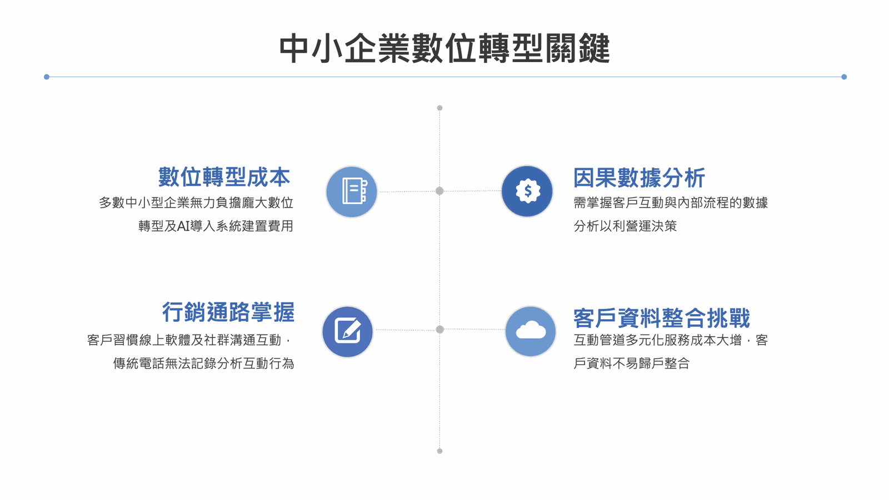

全球疫情的影響，宅經濟和遠距工作成為疫情下的新趨勢，由於生活型態的改變，導致市場不得不因應轉變，中小企業開始思考數位轉型的重要性，但到底什麼是數位轉型呢?數位轉型的關鍵又是什麼呢？
什麼是數位轉型？
數位轉型結合數位科技和人工智能導入組織中，從組織營運、科技工具、數據分析、到策略執行層面，全都一一轉變為嶄新的模式，提供客戶更高價值的服務，讓企業能快速掌握市場生態。
中小企業為何要進行數位轉型
面臨疫情衝擊企業營收，以及消費者型態轉變，中小企業總會調查顯示，有26%中小企業預估去年上半年營收衰退3成，18.7%企業恐減4成，13.8%業者認為狀況不妙，營收恐大減逾5成，由於疫情的不確定性讓企業被迫轉型，人們的生活習慣和消費模式的改變，讓企業不得不面對數位轉型的課題，為何數位轉型能夠進一步提升產業競爭力，拓展新商機呢?
根據世界經濟論壇（World Economic Forum, WEF）於 2019 年2 月發布《數位共享的未來－當責的數位轉型》指出，2022 年全球有 6 成 GDP 都將來自於數位轉型的成果。疫情尚未發生前，網路與數位化早已開始顛覆人們的生活及工作方式，此次因為疫情，企業更加體認到應加速數位化及數位轉型的腳步，「數位化」將成為未來產業發展新常態。不論是因疫情大幅增加的居家上班、遠距教學等，對網路視訊會議或教學的需求大增，促使企業須升級原有的資訊設備及運用雲端協作平臺等，未來以雲端處理企業內部營運、專案、協同作業及差勤管理等，將更加普及。其他如需要跟人群密切接觸的產業，為了防疫以減少接觸，也將加速自動化系統跟人工智慧（artificial intelligence, AI）的應用。
資料來源：經濟部中小企業處2021年中小企業白皮書
中小企業數位轉型的關鍵

數位轉型成本
多數中小企業無力負擔龐大數位轉型及AI導入系統建置的費用，而ai3人工智能提供雲端輕量化服務，讓中小企業以輕量租賃模式購買最需要的功能，降低系統投資成本及風險，並可與原業務及服務無痛接軌。
行銷通路掌握
客戶習慣線上軟體及社群溝通互動，傳統電話無法記錄分析互動行為，我們提供電話、網路、行動APP、社群媒體等全通路管道，全面性整合不同渠道之資訊，進行串接與處理。
客戶資料整合挑戰
互動管道多元化服務成本大增，客戶資料不易歸戶整合，我們協助您將會員特徵分眾，透過歸戶功能詳細記錄每位客戶的服務過程，當再次服務時即可彈出過往服務狀態，還能線上監控與管理，控管每次服務品質，讓你輕鬆經營顧客關係，提高顧客忠誠度
因果數據分析
企業需掌握客戶互動與內部流程的數據分析以利營運決策，透過掌握數據，就能精準鎖定潛在客戶，讓你掌握採購策略與分眾行銷！
透過以上四大關鍵，Ai3人工智能公司協助中小企業快速導入數位工具運用，並有效推動企業數位轉型成功，提升營運效率和客戶體驗，讓顧客服務更有價值！
觀看更多文章